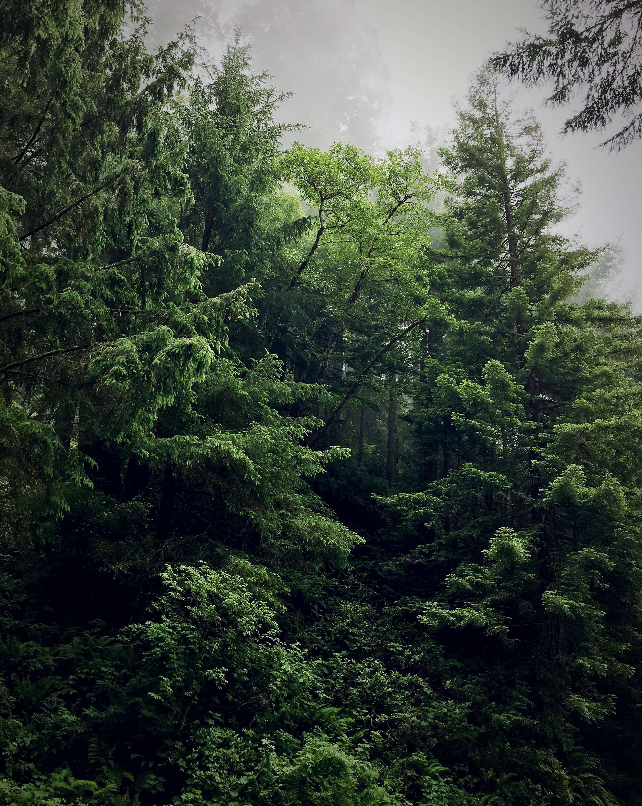

We here at Uncommon Creatures seek to provide information about some of the uncommon creatures and critters that live in the Pacific Northwest. You can learn about creatures such as the tree octopus, avian polar bears, Sasquatch, the St. Helens dragon, beavers, and Willatuk the Sea Serpent. We seek to educate what these creatures are, where these creatures live, how much they weigh, what they eat, and other miscellaneous facts about them!
You can go back to my GitHub website here!